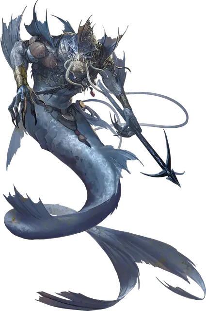

Мерроу
Merrow
Большой Монстр, хаотично-злой

Класс Доспеха 13 (природный доспех)
Хиты 45 (6к10 + 12)
Скорость 10 футов, плавая 40 футов
| мод | спас | ||
|---|---|---|---|
| СИЛ | 18 | +4 | +4 |
| ЛОВ | 10 | +0 | +0 |
| ТЕЛ | 15 | +2 | +2 |
| мод | спас | ||
|---|---|---|---|
| ИНТ | 8 | −1 | −1 |
| МДР | 10 | +0 | +0 |
| ХАР | 9 | −1 | −1 |
Чувства тёмное зрение 60 футов, пассивное Восприятие 10
Языки Акван, Бездны
Опасность 2 (450 опыта)
Бонус мастерства +2
Среда обитания Побережье, Под водой
Особенности
Амфибия. Мерроу может дышать и воздухом и под водой.
Действия
Мультиатака. Мерроу совершает две атаки: одну укусом, и одну либо когтями, либо гарпуном.
Укус. Рукопашная атака оружием: +6 к попаданию, досягаемость 5 футов, одна цель. Попадание: Колющий урон 8 (1к8 + 4).
Когти. Рукопашная атака оружием: +6 к попаданию, досягаемость 5 футов, одна цель. Попадание: Рубящий урон 9 (2к4 + 4).
Гарпун. Рукопашная или дальнобойная атака оружием: +6 к попаданию, досягаемость 5 футов или дистанция 20/60 футов, одна цель. Попадание: Колющий урон 11 (2к6 + 4). Если цель — существо с размером не больше Огромного, она должна преуспеть в состязании Силы с мерроу, иначе её подтянет на 20 футов в сторону мерроу.
Описание
Мерроу часто посещают прибрежные воды, охотясь на рыбаков, мерфолков и любых других съедобных существ, которые встретятся им на пути. Эти дикие чудовища хватают и пожирают неосторожную жертву, утягивая трупы в свои подводные гроты для пропитания.
Превращенные мерфолки. Давным-давно племя мерфолков нашло на дне моря идол Демогоргона. Не зная что это такое, они принесли артефакт своему королю. Каждого, кто коснулся идола, поразило безумие, в том числе и короля, который распорядился выполнить ритуал с жертвоприношением, чтобы открыть врата в Бездну. Океан стал красным от крови убитых мерфолков, но ритуал сработал, и король повел выживших через подводные врата в Бездну на слой Демогоргона. Мерфолки остались здесь на несколько поколений, сражаясь за свои жизни, пока Бездна полностью не исказила их, превратив в нескладных отвратительных чудовищ. Так появились первые мерроу.
Прибрежные разбойники. Всякий раз, когда представляется возможность, Князь Демонов посылает водянников назад на Материальный План, чтобы учинить резню в океанах. Мерроу — разбойники, нападающие на любых существ меньше и слабее себя.
Мерроу обитают в подводных пещерах, наполненных сокровищами и трофеями, взятыми с затонувших кораблей или забранными у жертв. Они привязывают гниющие трупы мёртвых врагов и утонувших моряков, чтобы отметить границы своей территории.